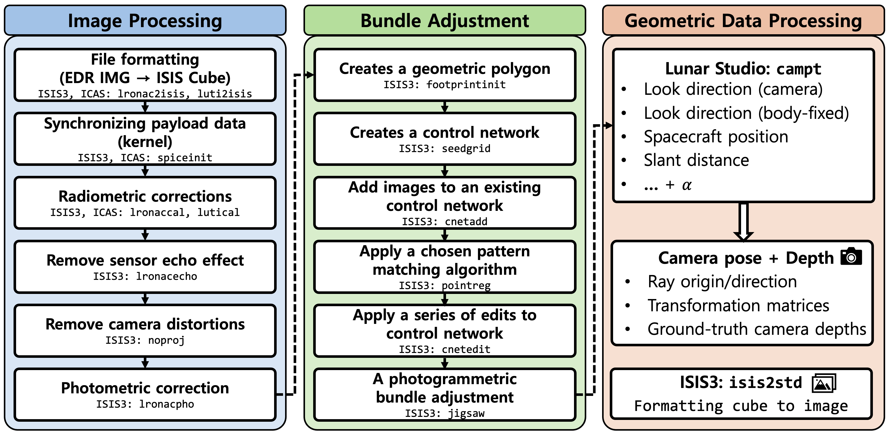
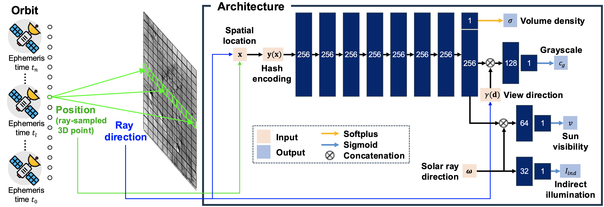
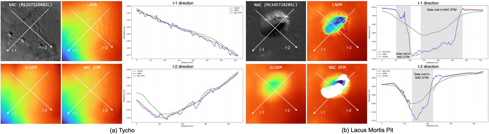
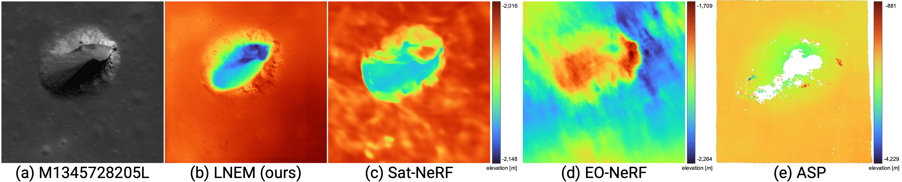
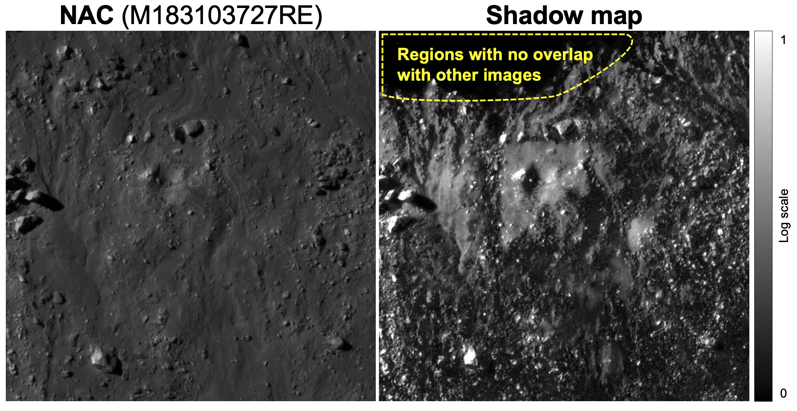
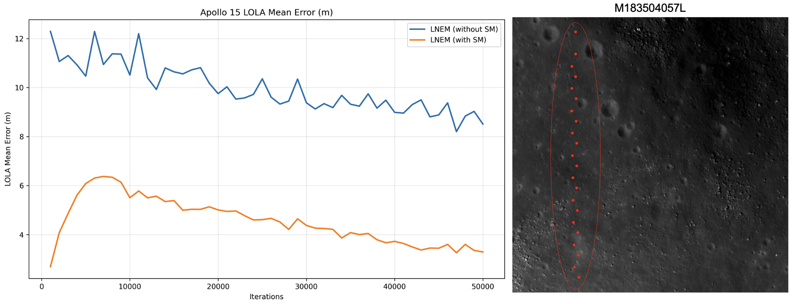
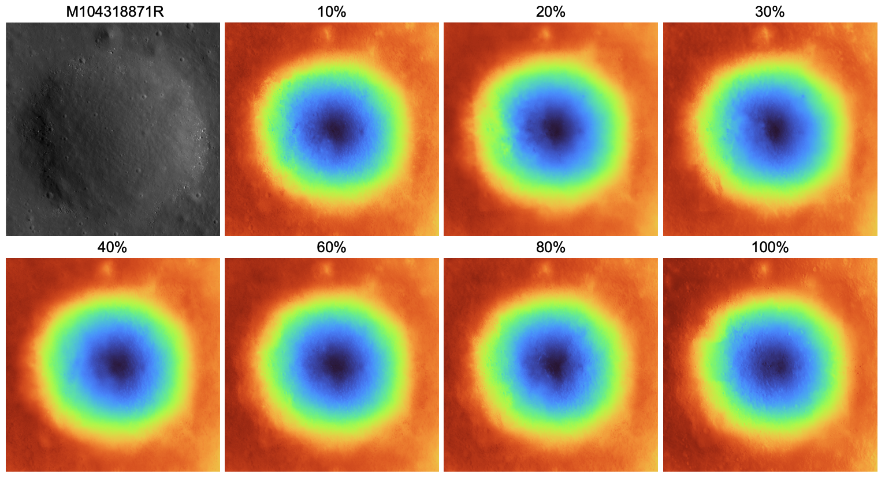

DEM Visualization
| LNEM | SLDEM | NACDTM | |
|---|---|---|---|
| Apollo 15 |
|||
| Apollo 17 |
|||
| Lacus | |||
| Tycho (LUTI) |
Lunar Studio
Lunar Studio is an end-to-end data processing pipeline that integrates fragmented ISIS3 and ASP workflows for systematic photometric and geometric preprocessing of lunar multi-orbit datasets. It exports per-line camera rotations and depth products for direct use in downstream neural rendering, and to our knowledge is the first dedicated pipeline for lunar neural rendering that integrates rigorous sensor modeling.
The pipeline consists of three stages: (1) Image Processing — radiometric correction, sensor echo removal, camera distortion removal, and photometric normalization, (2) Bundle Adjustment — footprint initialization, control network generation, and jigsaw bundle adjustment for cross-orbit alignment, and (3) Geometric Data Processing — per-pixel ray origin/direction, transformation matrices, and ground-truth camera depths via customized ISIS3 campt.

Figure 2. Overview of Lunar Studio data processing pipeline. An end-to-end pipeline integrating photometric corrections and rigorous sensor modeling for multi-orbit image alignment, exporting per-line camera rotations and depth products for downstream neural rendering.
Method
LNEM integrates three key design choices to address the challenges of lunar pushbroom neural rendering: grayscale volume rendering for monochromatic imagery, pushbroom ray computation with per-line camera poses from SPICE kernels, and multi-resolution hash encoding (L=32 levels) for adaptive spatial representation without site-specific tuning.
For shadow modeling, LNEM predicts per-sample sun visibility v and indirect illumination Iind as independent branches from the shared feature vector, conditioned on the solar ray direction ω derived from per-line ephemeris time. A shadow correction loss aligns solar-ray transmittance with predicted visibility, enabling illumination-aware reconstruction under challenging lunar lighting conditions.

Figure 3. LNEM pipeline. A pushbroom orbit sample is processed to output volume density and a 256-dimensional feature vector. The feature is combined with the sinusoidal-encoded view direction γ(d) to predict grayscale cg, and with the solar direction ω to predict sun visibility v, while Iind is predicted solely from ω. Hidden dimensions are 256 for the shared trunk and 128, 64, and 32 for the subsequent branches, each producing a scalar output.
Results
Qualitative Comparison
LNEM reconstructs continuous and detailed elevation maps even where NAC DTM exhibits data voids, such as pit interiors. Compared to SLDEM, NAC DTM, and neural baselines (Sat-NeRF, EO-NeRF, ASP), LNEM produces geometrically consistent DEMs across diverse terrain types including impact craters and pit structures.

Figure 6. Qualitative and elevation comparison of SLDEM, NAC DTM, and LNEM, where LNEM is trained using NAC images as input. We compare DEMs from SLDEM, NAC DTM, and LNEM over (a) Tycho and (b) Lacus Mortis Pit using three-orbit inputs. LNEM reconstructs continuous and detailed elevation, even where NAC DTM exhibits voids. Elevation maps use a common colormap and range, and profiles along I-1 and I-2 are presented.

Figure 7. Baseline comparison on Lacus Mortis Pit. (a) Input NAC image. (b) LNEM. (c) Sat-NeRF. (d) EO-NeRF. (e) ASP. Methods (b)–(d) are trained for 50,000 iterations, while (e) is a classical stereo pipeline. Methods (b) and (c) are depth-supervised and share the same supervision data and elevation range, whereas (d) and (e) use separate ranges due to larger offsets. EO-NeRF relies solely on photometric consistency without depth supervision, resulting in large global vertical offsets due to scale ambiguity, even reconstructing the pit crater as convex. ASP requires convergence-angle relaxation under small-baseline lunar conditions and produces only 6 valid LOLA match points due to triangulation failure over the pit interior.
Geometric Consistency and Shadow Modeling
To evaluate the impact of shadow modeling on cross-orbit consistency, we project predicted depth maps from multiple viewpoints into the MOON ME frame and measure per-pixel spatial dispersion across orbits. Shadow modeling improves σ2total across all eight regions. The mean σ2total decreases from 3.1884 without shadow modeling to 2.2145 with shadow modeling at the Apollo 15 site. Regions with the highest residual inconsistency coincide with shadow boundaries, where large photometric variation across orbits makes multi-view depth estimation inherently ambiguous. This spatial pattern confirms that σ2total provides a physically meaningful per-pixel uncertainty estimate without requiring additional network components.

Figure 8. Geometric consistency (σ2total) map (Apollo 15). Shadow modeling reduces multi-view inconsistency, yielding lower σ2total values and cleaner deviation maps. The mean σ2total decreases from 3.1884 without shadow modeling to 2.2145 with shadow modeling.
The predicted shadow map at the Eimmart A site illustrates the sun visibility learned by LNEM. Areas with direct solar illumination appear brighter, while regions outside the shared footprint of all orbits yield unreliable visibility estimates due to limited multi-view observations. This behavior is consistent with the shadow model's tendency to overfit under sparse-view conditions, such as 2-view configurations at Apollo 16 and Eimmart A.

Figure 10. Shadow map prediction (Eimmart A). Brighter regions indicate areas directly illuminated by the Sun, while non-overlapping regions exhibit unreliable estimates due to insufficient multi-view coverage.
Quantitative Results
After bias correction, LNEM achieves RMSEcorr of 0.67 to 5.67 m across all eight NAC regions, consistently outperforming neural baselines. Sites with three input views achieve 0.67 to 3.69 m accuracy. Two-view sites such as Apollo 16 and Eimmart A show elevated errors of 4.10 to 5.67 m. The high raw RMSELOLA values in several regions mainly arise from global vertical offsets, as reflected by the gap between RMSELOLA and RMSEcorr.
| Method | Apollo 15 | Apollo 16 | Apollo 17 | Eimmart A | Tycho | V. Schröteri | Lacus Mortis Pit | Marius Hills Pit |
|---|---|---|---|---|---|---|---|---|
| RMSELOLA (m) ↓ | ||||||||
| SLDEM* | 2.115 | 1.366 | 1.893 | 2.842 | 3.476 | 5.096 | 2.487 | 0.922 |
| NAC DTM* | 1.918 | 0.616 | 0.954 | 3.586 | 1.551 | 3.698 | 4.865 | 0.823 |
| LNEM (w/o SM) | 10.602 | 1.970 | 8.264 | 10.995 | 3.886 | 10.904 | 11.214 | 1.530 |
| LNEM (w/ SM) | 8.602 | 4.630 | 7.318 | 10.686 | 2.117 | 4.248 | 10.228 | 0.676 |
| RMSEcorr (m) ↓ | ||||||||
| ASP | 3.103 | 0.324 | 1.986 | 2.283 | 0.672 | 15.083 | 109.961 | 1.891 |
| EO-NeRF | 58.386 | 7.341 | 29.824 | 97.719 | 46.951 | 22.826 | 62.296 | 38.243 |
| Sat-NeRF | 39.196 | 15.956 | 24.169 | 38.917 | 11.207 | 19.137 | 8.734 | 6.209 |
| LNEM (w/ SM) | 1.565 | 4.096 | 1.228 | 5.674 | 0.979 | 3.689 | 2.025 | 0.673 |
Table 5. Elevation error (m) against LOLA across eight LROC NAC regions. SLDEM and NAC DTM are production-level DEMs*. Bias-corrected metrics (RMSEcorr) are reported for all other methods using 2 to 3 orbits per site. EO-NeRF and Sat-NeRF use RPC models from ASP's cam2rpc on identical Lunar Studio data. SM denotes shadow modeling.
*SLDEM co-registers 43,200 TC tiles via two-step ICP with GRAIL-based refinement. NAC DTM uses up to 9 stereo pairs aligned to LOLA via geomorphic feature matching.
Additional Analysis
Elevation Profile Comparison
We compare DEMs generated by LNEM with SLDEM and NAC DTM across three sites: Apollo 15 (NAC 2-view), Apollo 17 (NAC 3-view), and Tycho (LUTI 2-view). LNEM closely follows the global elevation trends of both baselines. In the I-1 profiles of the Apollo 15 and Tycho regions, LNEM additionally recovers geometric details that are over-smoothed in SLDEM and NAC DTM. For the Tycho region, LNEM additionally recovers geometric details in the I-2 direction where NAC DTM exhibits a data void.

Figure A3. Qualitative and cross-section elevation comparisons of SLDEM, NAC DTM, and LNEM across Apollo 15, Apollo 17, and Tycho. Elevation maps use a common colormap and range, and profiles along I-1 and I-2 are presented, following the same procedure as Figure 6 in the main paper. LNEM closely follows global elevation trends and additionally recovers fine geometric details over-smoothed in the baselines. For the Tycho I-2 direction, a data void in NAC DTM is visible, while LNEM reconstructs continuous elevation.
LOLA Error Convergence
The convergence behavior of the LOLA mean error is computed as the average absolute elevation difference between the reconstructed DEM and LOLA measurements at matched locations. During early training, LNEM with shadow modeling exhibits a temporary increase in LOLA error, indicating that the model first prioritizes learning geometric structure through multi-view photometric consistency rather than fitting the depth prior. After this initial phase, the error decreases steadily as the shadow-aware model converges to a geometrically consistent reconstruction.

Figure A4. Convergence behavior of LOLA mean error. The right panel shows 22 LOLA measurement points (red dots) at the Apollo 15 site in M183504057L. The left plot illustrates the evolution of the mean error over training iterations. The initial increase in LOLA error for LNEM with shadow modeling indicates that the model first prioritizes learning geometric structure through multi-view photometric consistency rather than fitting the depth prior.
Depth Supervision Sensitivity
We vary the percentage of rays receiving depth supervision on Apollo 17, from 10% to 100%. All ratios produce visually comparable reconstructions with no systematic degradation. RMSEcorr shows no monotonic trend across supervision ratios, with the best performance achieved at 30% (RMSEcorr = 1.614 m). This confirms that LNEM learns geometry primarily through multi-view photometric consistency rather than memorizing the supervising DEM.

Figure A5. Full depth supervision sensitivity results (Apollo 17). Qualitative DEM reconstructions are shown for supervision ratios from 10% to 100%. The input NAC image (M104318871R) is shown in the top-left panel. All ratios produce visually comparable reconstructions with no systematic degradation, and RMSEcorr shows no monotonic trend, confirming that LNEM learns geometry primarily through multi-view photometric consistency.
Adaptive Hash Encoding vs. Fourier Feature Mapping
We compare LNEM's multi-resolution hash encoding against fixed Fourier feature mapping across different frequency hyperparameters M at the Apollo 17 site. The Fourier-based baseline fails to disentangle texture from geometry due to its fixed frequency basis. This limitation arises from a fundamental representational deficit rather than insufficient training — even when extending training to 8×105 iterations, the baseline yields negligible improvement in recovering fine geometric details. In contrast, LNEM reconstructs high-frequency geometric and photometric structures within 50,000 iterations, achieving superior data efficiency and robustness without frequency tuning. LNEM achieves PSNR of 48.39 dB at Apollo 17, compared to the best sinusoidal baseline of 33.38 dB.

Figure A6. Qualitative results of LNEM and Fourier feature mapping at Apollo 17 (M104318871R). All results are shown at 50k iterations with identical hyperparameters, varying only the positional encoding scheme. LNEM (adaptive hash encoding) achieves PSNR of 48.39 dB, substantially outperforming all sinusoidal baselines regardless of M. The sinusoidal baseline requires site-specific tuning of M and fails to generalize across scenes with different geometric complexity.